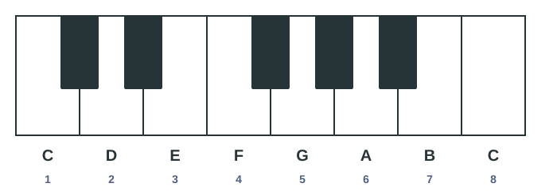
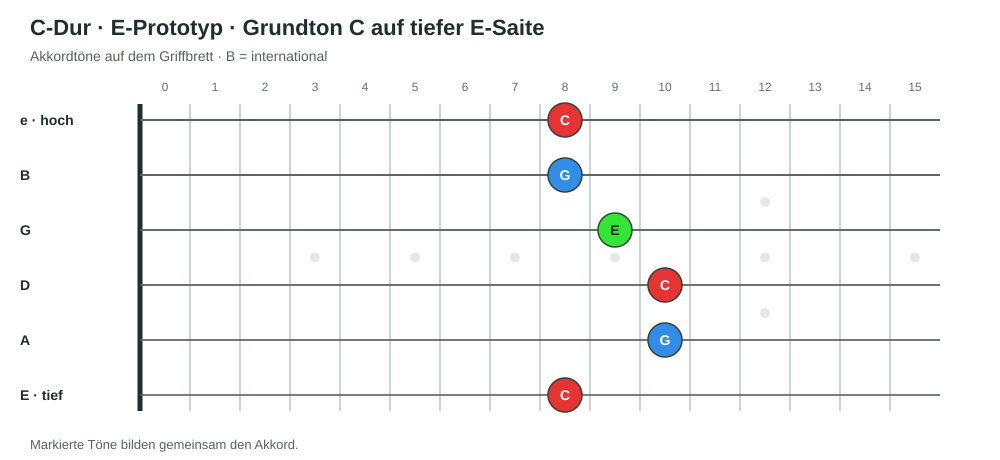
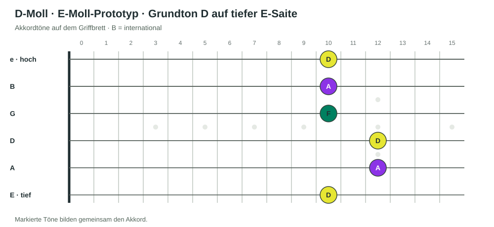
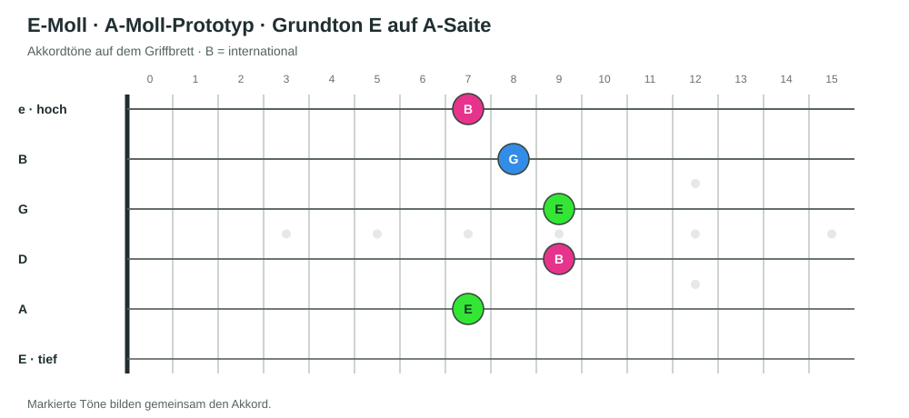
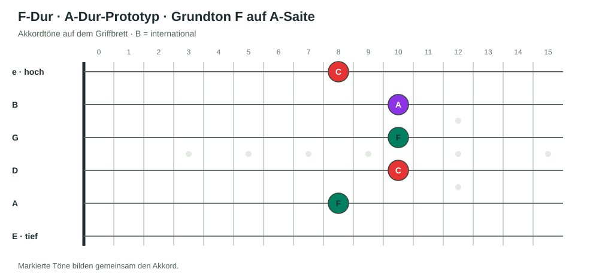
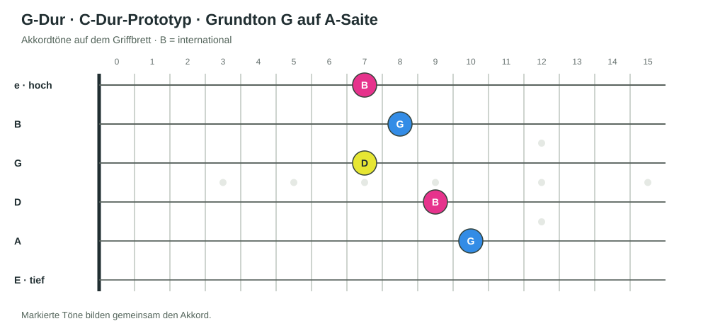
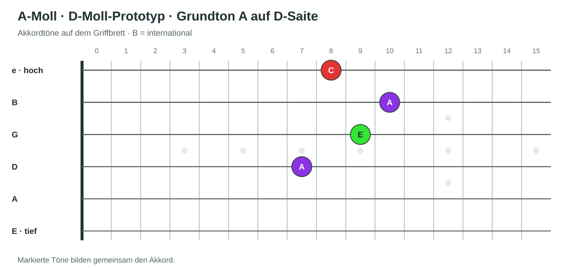
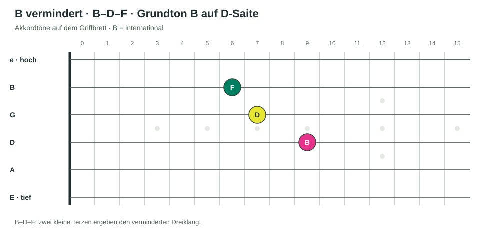

Einführung
Akkorde aus der Dur-Tonleiter verstehen.
Dieses Kapitel wurde aus dem Kurs „Pentatonik – Einstieg“ herausgelöst. Du brauchst die C-Dur-Tonleiter als Ausgangspunkt; anschließend lernst du, wie aus ihren Tönen Dreiklänge entstehen und wie sich diese auf der Gitarre greifen lassen.
Die Grundlagen zu Akkorden und Tonalität findest du außerdem in der Harmonie-Fakultät.
Kapitel 01
Die Akkorde der Tonleiter.
Du hast die C-Dur-Tonleiter kennengelernt. Jetzt bauen wir aus ihren Tönen sieben Akkorde und übertragen sie anschließend auf das Griffbrett. In der Harmonie-Fakultät, Kurs 1 · Akkorde und Tonalität werden Dreiklänge und ihr Aufbau behandelt. Harmonie-Kurs 2 sieht außerdem Akkorde einer Tonart und ihre Verbindungen vor.
Lektion 01
Akkorde aus C-Dur bilden.
Wir nehmen nur die weißen Tasten von C-Dur. Starte auf einer Note, überspringe die nächste, nimm die folgende und überspringe wieder eine: C–D–E–F–G–A–B. So entstehen jeweils drei Töne übereinander. Dieses Muster funktioniert von jeder Stufe aus; deshalb ergeben sich sieben Akkorde.

Wenn wir von C aus jeden zweiten Ton wählen, erhalten wir C–E–G. Von D aus sind es D–F–A. Wir wiederholen das von jeder Note aus:
Die sieben Dreiklänge in C-Dur
C–E–G · D–F–A · E–G–B · F–A–C · G–B–D · A–C–E · B–D–F
Jeder Akkord nimmt also eine Note, überspringt eine, nimmt eine, überspringt eine und nimmt die dritte.
Lektion 02
Terzen bestimmen Dur und Moll.
Die Grundakkorde bestehen aus zwei übereinandergeschichteten Terzen. Die Terz über dem Grundton prägt, ob ein Dreiklang Dur oder Moll heißt: Eine große Terz führt zum Dur-Dreiklang, eine kleine Terz zum Moll-Dreiklang.
Große Terz + kleine Terz. Beispiel C–E–G: C–E ist eine große Terz, E–G eine kleine Terz.
Kleine Terz + große Terz. Beispiel D–F–A: D–F ist eine kleine Terz, F–A eine große Terz.
Bei der 7. Stufe entsteht eine Ausnahme: B–D–F ist ein verminderter Dreiklang. Er besteht aus zwei kleinen Terzen: B–D und D–F.
Damit lautet die Reihenfolge der Akkordtypen in C-Dur: Dur – Moll – Moll – Dur – Dur – Moll – vermindert.
Übung 2.1 · Akkorde selbst bilden
- Schreibe die C-Dur-Tonleiter auf: C–D–E–F–G–A–B.
- Beginne nacheinander auf jeder Note und bilde den Akkord, indem du immer eine Note überspringst und die nächste nimmst.
- Bestimme für jeden Dreiklang, ob die Terzenfolge Dur, Moll oder vermindert ergibt.
- Vergleiche dein Ergebnis mit der Lösung.
Lösung anzeigen
C–E–G = C-Dur · D–F–A = D-Moll · E–G–B = E-Moll · F–A–C = F-Dur · G–B–D = G-Dur · A–C–E = A-Moll · B–D–F = B vermindert.
Dur – Moll – Moll – Dur – Dur – Moll – vermindert.
Lektion 03
Die Akkorde auf die Gitarre übertragen.
Nun verschieben wir vertraute offene Akkordformen entlang des Griffbretts. Jeder Griff zeigt einen Akkord aus C-Dur. Die markierten Töne bilden den Akkord; die Zahlen am Hals zeigen die Bundnummern.
1 · C-Dur mit dem E-Prototyp
Der Grundton C liegt auf der tiefen E-Saite im 8. Bund. Von dort greifen wir den verschiebbaren E-Dur-Prototyp.

2 · D-Moll mit dem E-Moll-Prototyp
Der Grundton D liegt auf der tiefen E-Saite im 10. Bund. Wir verwenden den E-Moll-Prototyp. Dieser Griff reicht in den Bereich der nächsten Dur-Pentatonikposition; für diesen ersten Zugang orientierst du dich am Grundton und an der Form.

3 · E-Moll mit dem A-Moll-Prototyp
Der Grundton E liegt auf der A-Saite im 7. Bund.

4 · F-Dur mit dem A-Dur-Prototyp
Der Grundton F liegt auf der A-Saite im 8. Bund.

5 · G-Dur mit dem C-Dur-Prototyp
Der Grundton G liegt auf der A-Saite im 10. Bund.

6 · A-Moll mit dem D-Moll-Prototyp
Der Grundton A liegt auf der D-Saite im 7. Bund.

7 · B vermindert
Der Grundton B liegt auf der D-Saite im 9. Bund. Dieser besondere Akkord ist eine Ausnahme und wird hier zunächst als eigener Griff gelernt, ohne ihn von einem offenen Akkordprototyp abzuleiten.
